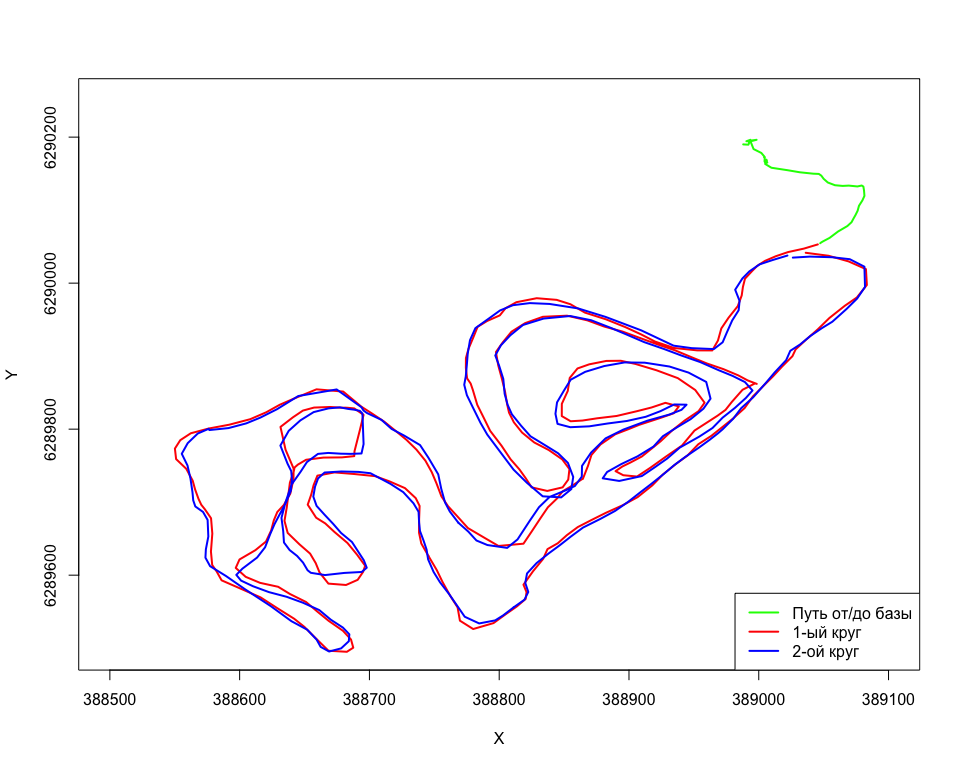
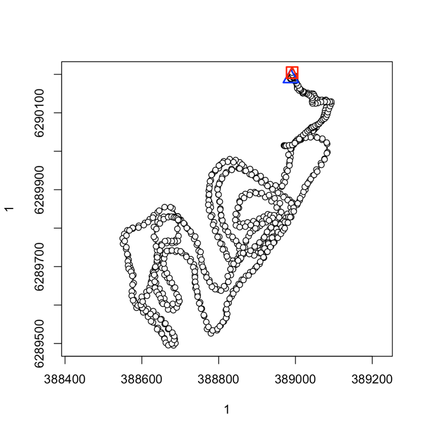
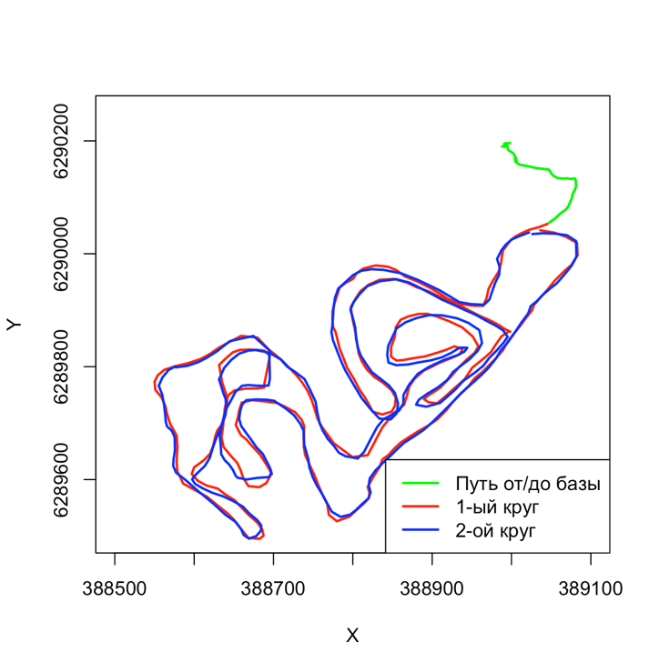
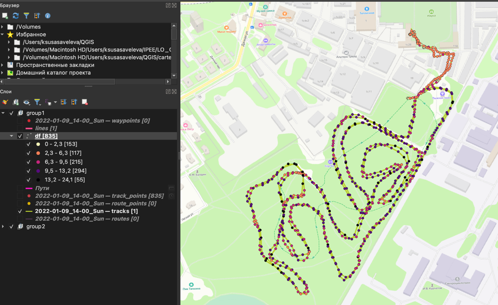

## Reading layer `track_points' from data source
## `/Users/ksusasaveleva/R_projects/Modeling/Ski/2022-01-09_14-00_Sun.gpx'
## using driver `GPX'
## Simple feature collection with 835 features and 26 fields
## Geometry type: POINT
## Dimension: XY
## Bounding box: xmin: 37.178 ymin: 56.73616 xmax: 37.18673 ymax: 56.7426
## Geodetic CRS: WGS 84## [1] 4522.259## [1] 4523.89## [1] 258.7732## [1] 432.9444## [1] 9737.867## [1] 9046.15
# Берем самую первую точку и все отсальные
# Переводим все обратно в пространственные данные
# с помощью функции st_distance считается расстояние между первой и остальными
# Находим максимальное расстояние
base_point <- df[1,]
points_sf <- st_as_sf(df, coords = c("x", "y"), crs = st_crs(base_point))
base_point <- st_as_sf(base_point, coords = c("x", "y"), crs = st_crs(points_sf))
# Вычисляем расстояния до базы
distances <- st_distance(points_sf, base_point)
# Находим точку с максимальным расстоянием
max_dist_idx <- which.max(distances)
max_point <- points_sf[max_dist_idx, ]
max_distance <- distances[max_dist_idx]## Максимальное расстояние: 764.38 метров

